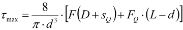
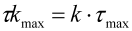

|
|
|


剪切应力值
在计算最高剪切应力的同时，也会计算轴向弹簧行程和剪切弹簧行程。
对于圆锥压缩弹簧，此计算不包括剪切弹簧行程。只确定具有特定直径的轴向弹簧行程的比例。
|  | (47.1) |
τmax：最高剪切应力 [N/mm2]
d：线径 [mm]
F：弹簧力 [N]
D：圈径 [mm]
sQ：剪切弹簧行程 [mm]
FQ：剪切弹簧力 [N]
L：弹簧长度 [mm]
最高修正剪切应力按下式计算：
|  | (47.2) |
τkmax：最高修正剪切应力 [N/mm2]
τmax：最高剪切应力 [N/mm2]
k：应力修正系数
Shear stress values
The calculation of the highest shear stress also calculates the axial and shear spring travel.
In the case of conical compression springs, this calculation does not include shear spring travel. Only the proportion of the axial spring travel with the particular diameter is determined.
| (47.1) |
τmax: highest shear stress [N/mm2]
d: wire diameter [mm]
F: spring force [N]
D: coil diameter [mm]
sQ: shear spring travel [mm]
FQ: shear spring force [N]
L: spring length [mm]
The highest corrected shear stress is calculated by:
| (47.2) |
τkmax: highest corrected shear stress [N/mm2]
τmax: highest shear stress [N/mm2]
k: stress correction factor